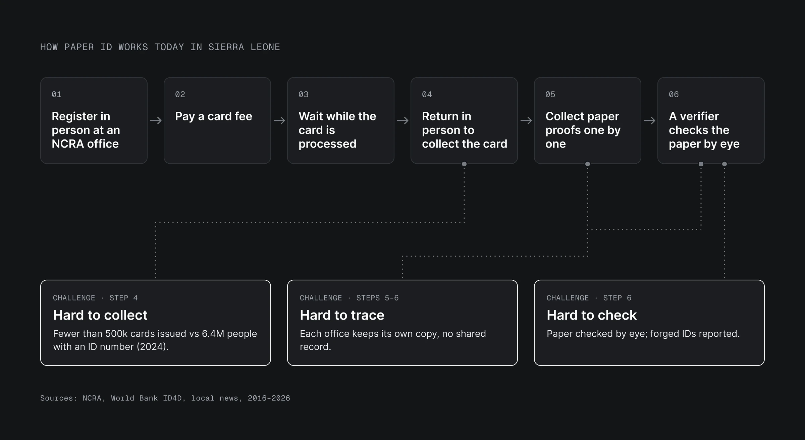
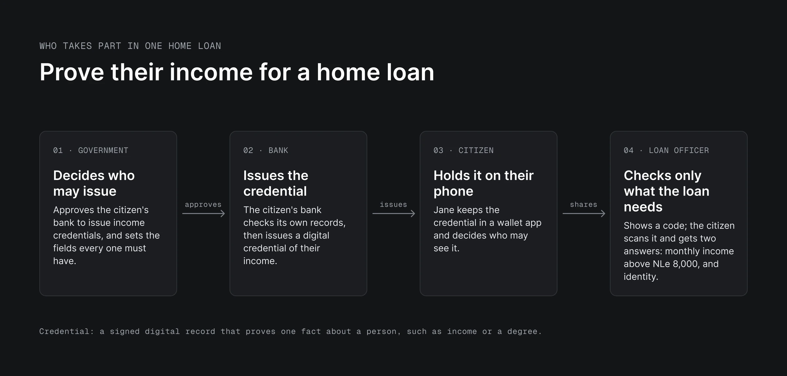
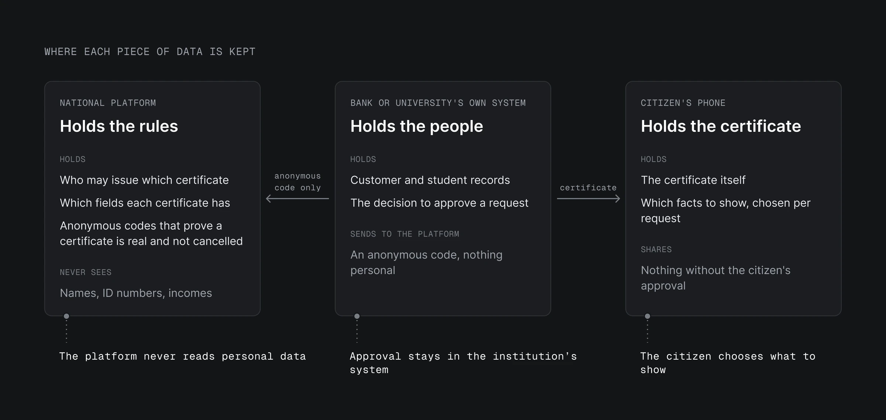
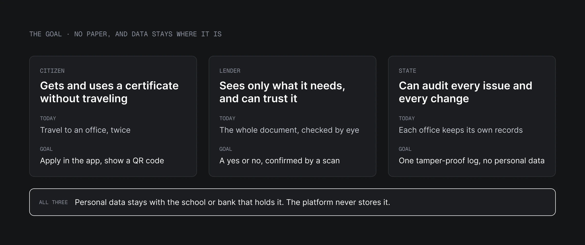
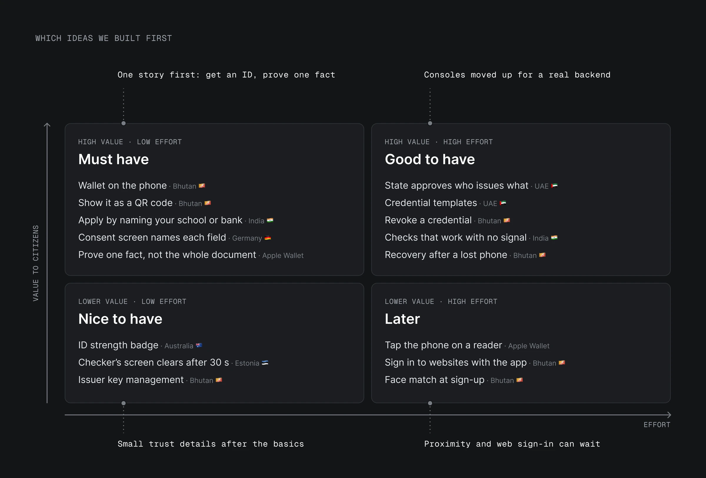
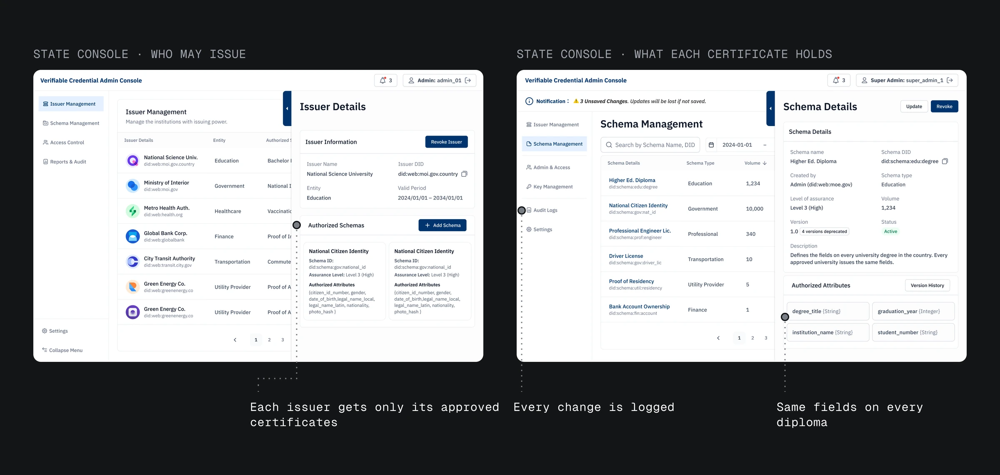
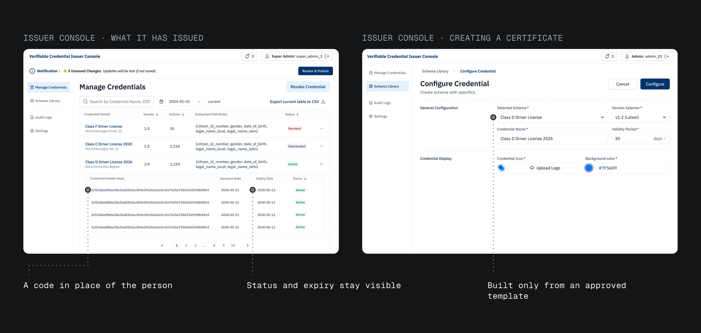
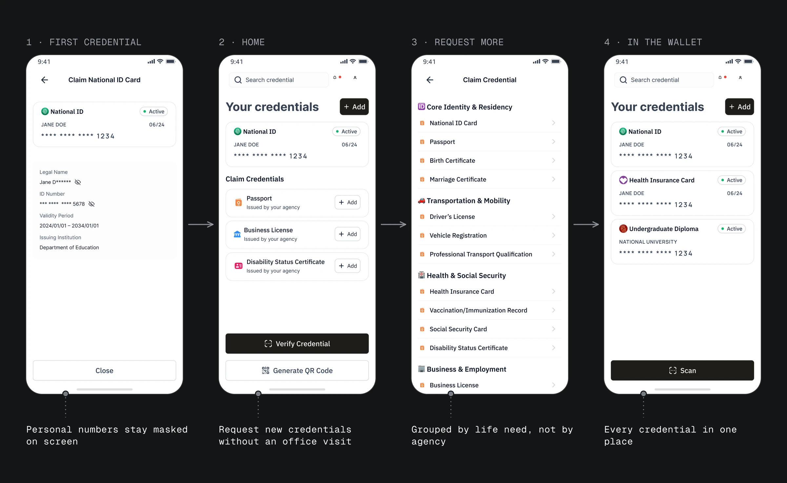
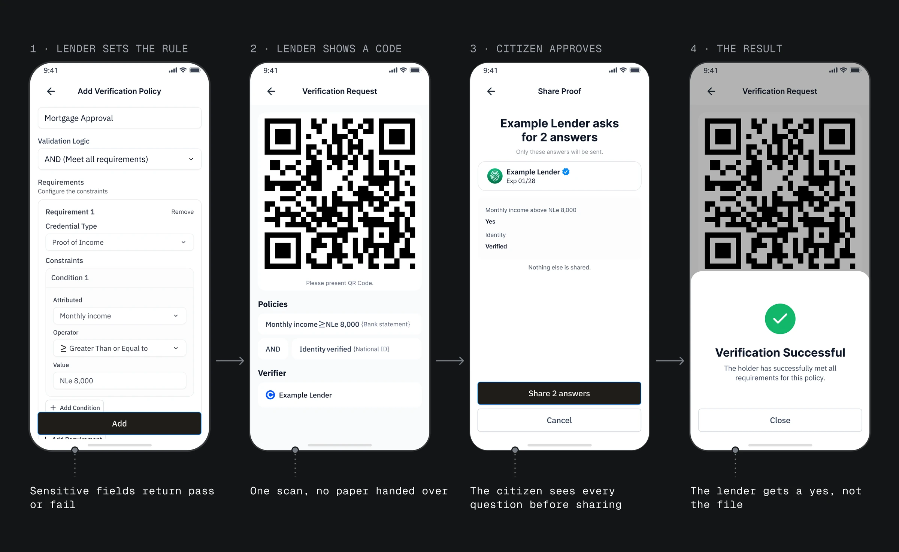
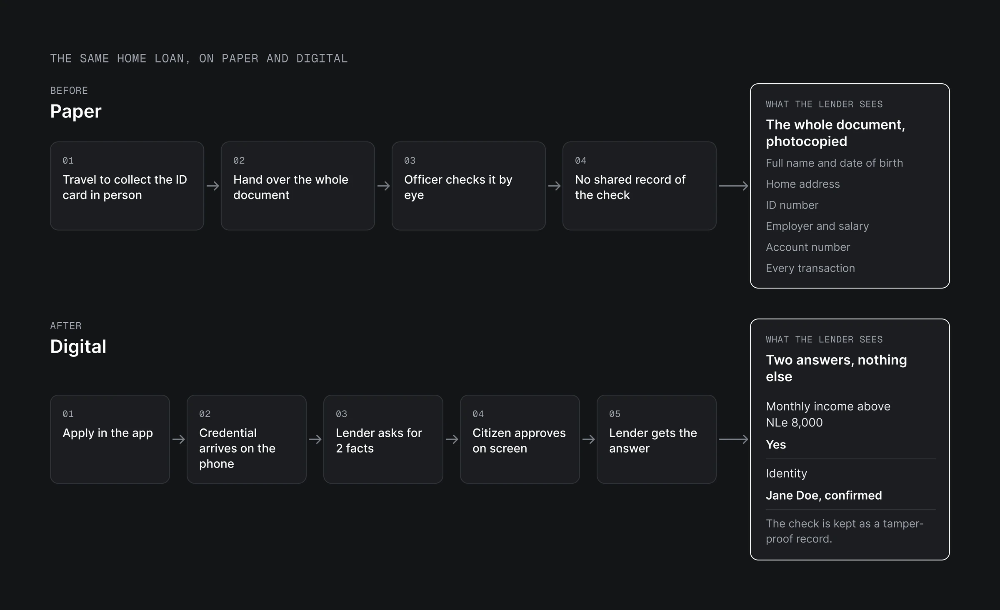

02 · Background
Paper ID is hard to get, check and trace
In Sierra Leone, most proof of identity still lives on paper. The state decides which offices may issue each document. The national registration agency (NCRA) issues ID cards. A bank issues a statement of savings. The citizen collects the paper and shows it to whoever needs it.
The process breaks in three places.
- People can't collect it. You register in person, pay for the card, then return in person to pick it up, often in Freetown or a district town (Calabash, Feb 2026). By 2024, fewer than half a million cards had been issued for 6.4 million registered ID numbers (World Bank, Dec 2025).
- No one can verify it. Paper is checked by eye, so whoever checks it can't confirm a document is real or unchanged, and forged ID cards get through (Biometric Update, Mar 2025). The lender keeps a photocopy. Employers and landlords face the same problem.
- Nobody can trace it. Each office keeps its own records. There is no shared record to audit.

02 · Background
Paper ID is hard to get, check and trace
- In Sierra Leone, most proof of identity still lives on paper.
- It breaks in three places: people can't collect it, no one can verify it, and nobody can trace it.
- By 2024, fewer than half a million cards had been issued for 6.4 million registered ID numbers.
03 · Users
Issuers sign credentials, verifiers check validity
Four groups use the system. A credential is a signed digital record that proves one fact, such as income or a degree.
- The state approves which offices may issue each credential, and which fields it holds.
- The issuer, such as a school or bank, approves requests in its own system and signs the credential.
- The citizen asks for a credential, keeps it on their phone and decides what to show.
- The verifier, such as a lender, shop or agency, checks that a credential is valid and gets an answer. Local departments approve verifiers, outside this version.
One story runs through this case: a home loan. A citizen wants a mortgage, and the lender asks them to prove their income. Today their bank prints a statement, and they hand the whole page over.

03 · Users
Issuers sign credentials, verifiers check validity
- Four groups use the system: the state, issuers such as schools and banks, citizens, and verifiers such as lenders.
- A credential is a signed digital record that proves one fact, such as income or a degree.
- One story runs through this case: a home loan, where the lender asks the citizen to prove their income.
04 · Insight
Schools and banks issue credentials; the platform never sees the data
One line could not be crossed: the platform must never read or store a citizen's personal data. For a national ID, this is data sovereignty. A country's citizen data stays in that country's hands.
That raised a hard question. If the platform can't see who people are, how does it know whom to issue a credential to? My answer was to change the platform's job: it sets the rules, and the schools and banks that already hold the records do the issuing.
- The state decides who may issue which credential, and which fields it holds.
- Each school or bank approves requests in its own system, where its records already live.
- The citizen keeps the credential and decides what to show.
The platform keeps only rules and anonymous codes.

04 · Insight
Schools and banks issue credentials; the platform never sees the data
- One line could not be crossed: the platform must never read or store a citizen's personal data.
- So the platform sets the rules, and the schools and banks that already hold the records do the issuing.
- The platform keeps only rules and anonymous codes.
05 · Goal
Citizens prove facts from their phone, not paper
Take issuing, holding and checking a credential off paper. Personal data stays private, and the citizen decides what to share.
- A citizen can get and use a credential without traveling.
- A lender sees only the answers the loan needs, and can trust them.
- The state can audit every issue and every change.

05 · Goal
Citizens prove facts from their phone, not paper
- Take issuing, holding and checking a credential off paper. Personal data stays private, and the citizen decides what to share.
- A citizen can get and use a credential without traveling.
- A lender sees only the answers the loan needs, and can trust them.
- The state can audit every issue and every change.
06 · Research
Credentials live on the phone, not a server
I ran a competitive analysis of national digital ID systems in Bhutan, Australia, Singapore, the UAE, India and Estonia, plus Apple's digital ID. For each, I mapped who holds the credential, how it is checked and what the system can see. They fall into three models (Sign on X, Mar 27, 2026).
- Centralized Registry (Singapore, the UAE, Australia). One national system is the source of truth, and every check runs through it. It is easy to roll out and reaches people fast, but it is a single point of failure, and it sees every use.
- Federated Exchange (India's DigiLocker, Estonia's X-Road). Agencies keep their own data, and a broker connects them. It fits how institutions already work, but data still moves server to server, and the broker sees every request.
- Wallet-based, Credential-First (Bhutan, Apple's digital ID). Authorities issue credentials, citizens hold them on their phone, and verifiers ask only for what they need. It spreads the least data and can work offline, but recovery after a lost phone and revocation are harder.
Three findings shaped the design.
- Only the wallet-based model can be checked without calling a server. About 1 in 5 people in Sierra Leone are online. So the credential lives on the citizen's phone and is shown as a QR code.
- The more a central server sits in the middle, the more it sees. Sierra Leone has no data-protection law yet. So the platform keeps no personal data, and records stay with the institution that issued them.
- A checker needs an answer, not the document. Apple's digital ID confirms "Over 21" without showing a birth date. So our lender asks "Income above the limit?" and gets a yes or no.
I then sorted every idea by value to citizens and effort to build. The prototype covers getting a credential and proving one fact with consent. Offline checks and recovery after a lost phone come next.

The result was four products: a console for the state, a console for each issuer, an app for citizens and an app for lenders.
06 · Research
Credentials live on the phone, not a server
- I ran a competitive analysis of national digital ID systems and found three models: Centralized Registry, Federated Exchange and Wallet-based, Credential-First.
- Only the wallet-based model can be checked without calling a server, so the credential lives on the citizen's phone.
- The more a central server sits in the middle, the more it sees, so the platform keeps no personal data.
- A checker needs an answer, not the document, so the lender gets a yes or no.
07
Key decisions
Decision 1: the national console approves issuers; local departments approve verifiers
My first draft put every institution in one national queue, whether it issued credentials or only checked them. That would make a ministry approve every bank branch, landlord and shop. So I split them: the national console approves issuers, and local departments approve verifiers such as shops and lenders. The state still decides both, in different places.
For each issuer, the state also sets what it may issue. A university is approved for diplomas, and only diplomas. A template is the list of fields a credential holds. Every university's diploma uses the same one, with no extra fields.
Every approval and every change is kept as a tamper-proof record. No one can change a record later without the change showing.

Decision 2: issuers see counts, not personally identifiable data
The test: the platform must never touch personal data. Connecting the issuer console to the university's student records would save the issuer a step, but it fails the test. So approval happens in the university's own system, and the console only manages the template and the credentials.
Each holder appears as a code that names no one. The issuer still sees issue dates, expiry dates and status, and can revoke a credential by its code.

Decision 3: the credential lives on the citizen's phone
The citizen signs in with their national ID number first, so every credential is tied to them. Then they apply for the credentials they need from the respective institutions. For a diploma, they enter their university, student number and graduation year. The request goes to that institution's own system. Once approved, the credential lives on their phone.
To use it, they scan a QR code. No trip to an office. No paper.

Decision 4: selective disclosure, consent, then verification
The test: a lender should learn only what the loan needs. Showing the whole credential, as paper does, fails the test and repeats the paper problem. For a home loan the lender needs two answers: does the citizen earn more than NLe 8,000 a month (about $350), and are they who they say they are?
Selective disclosure: the lender asks for answers, not documents. The lender builds its rule by picking the credential, the field and the condition from lists. For a sensitive field like income, the rule returns only a yes or no.
Consent: the citizen sees every question before anything is shared. The lender shows a QR code. When the citizen scans it, their phone lists those exact questions, and they share or cancel. If they cancel, nothing is shared.
Verification: the lender gets a checked answer. The answer arrives signed, so the lender knows it is real and unchanged. A revoked or expired credential fails the check.
The cost: a lender must set up its rule before it can show a code. Picking from lists keeps that step short.

07
Key decisions
Decision 1
The national console approves issuers; local departments approve verifiers
- What
- A ministry shouldn't approve every bank branch and shop, so the state approves issuers nationally and verifiers through local departments.
Decision 2
Issuers see counts, not personally identifiable data
- What
- Approval happens in each issuer's own system; the console shows each holder only as a code that names no one.
Decision 3
The credential lives on the citizen's phone
- What
- The citizen signs in with their national ID number, applies to the institution, and keeps the credential on their phone.
Decision 4
Selective disclosure, consent, then verification
- What
- The lender asks for answers, not documents; the citizen sees every question and approves it on their phone.
- Cost
- A lender must set up its rule before it can show a code.
08 · Before and after
From a photocopied statement to two approved answers
Before: the citizen collects a printed statement from their bank, hands over the whole page, and the lender checks it by eye and keeps a photocopy. After: the lender asks two questions with a QR code, the citizen approves them on their phone, and the lender gets only two answers: income above the limit, and identity verified.

08 · Before and after
From a photocopied statement to two approved answers
- Before: the citizen collects a printed statement from their bank, hands over the whole page, and the lender checks it by eye and keeps a photocopy. After: the lender asks two questions with a QR code, the citizen approves them on their phone, and the lender gets only two answers: income above the limit, and identity verified.
09 · Result
The demo behind Sierra Leone's digital ID partnership
Sign used this design as its demo in government negotiations. In Sierra Leone, those talks led to a three-way partnership, announced in July 2026 (X, Jul 6, 2026). It built on a digital ID agreement Sierra Leone and Sign had signed in November 2025 (X, Nov 9, 2025). Under the partnership, Sign leads the system design and implementation (Biometric Update, Jul 2026).
The system has not launched to citizens yet. At launch I would measure days from request to credential, how often citizens decline a request, and how often a scan fails.
09 · Result
The demo behind Sierra Leone's digital ID partnership
- Sign used this design as its demo in government negotiations. In Sierra Leone, those talks led to a three-way partnership, announced in July 2026 (X, Jul 6, 2026).
- The system has not launched to citizens yet.
10 · Reflection
An extra step for issuers, and an infrastructure gap
Keeping citizen data off the platform had a cost. Because the platform can't see an issuer's records, the issuer does one more step. It approves in its own system, then records the credential on the platform. I would design that hand-off together with issuers from the start, so the two steps feel like one.
Designing phone-first had a cost too: Sierra Leone's physical infrastructure is still thin. 93% of people have a national ID number, but only about 3 in 10 adults have a smartphone, and about 1 in 5 people are online (Biometric Update, Jun 2025; smartphone share from a published policy report, Dec 2025). I still designed for the phone first, because the country is moving its services online and phone access is growing with it. The system and the country move forward together.
10 · Reflection
An extra step for issuers, and an infrastructure gap
- Keeping citizen data off the platform had a cost.
- Designing phone-first had a cost too: Sierra Leone's physical infrastructure is still thin.